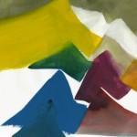
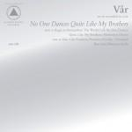

Music Reviews
-

She & Him Volume 3
Volume 3 is another consistent record from Zooey Deschanel and M. Ward. While there is much enjoyment to be found in the upbeat songs, it's the sense of melancholy and the slight variations on the duo's musical stylings that make this album a strong addition to their catalog.
Joe Marvilli looks at the next chapter of Zooey and M. Ward... -

The Pastels Slow Summits
The venerable indie-pop Glaswegians release their first proper album in sixteen years, one that bears the quiet, understated splendor of a warm, lazy day with a pervading atmosphere of content and jollity.
Juan Edgardo Rodríguez needs a new heart... -
Ten Kens Namesake
Art rockers Ten Kens expand upon their dark and ethereal 2012 release, Namesake, by issuing it physically and adding some songs.
Sean Caldwell reviews... -

The National Trouble Will Find Me
Brooklyn's most reliable are back with another strong album of abstract lyricism and memory.
Forrest Cardamenis reviews... -
Majical Cloudz Impersonator
Despite their putrid name, Canadian duo Majical Cloudz create raw, intimate, and honest music utilizing little more than sparse synths and booming vocals, finding and embracing a strong emotional link between the two to make an album that's undeniably human.
Peter Quinton was never too good at making eye contact, unfortunately... -

Vår No One Dances Quite Like My Brothers
Featuring members of Danish punk bands Iceage, Sexdrome, and Lower, Vår's debut album combine industrial, post-punk, and synth-pop influences to craft an album of bleak, goth-tinged romance.
No one writes music reviews quite like Peter Quinton... -

Daft Punk Random Access Memories
There's certainly been a substantial amount of hype for the latest Daft Punk album, but does it live up to the nearly monolithic expectation that its marketing campaign has built up?
Andrew Ciraulo briefly departs the dance floor to bring you this review... -

The Veils Time Stays, We Go
The Veils get serious on their fourth full length, but does it work?
John Grimley thinks time probably doesn't stay too long... -

Sam Amidon Bright Sunny South
Enlisting venerable engineer Jerry Boys, the London-based folk singer-songwriter's deeply felt effort continues his tradition of altering old folk songs with a jazzy, melancholic elegance.
Juan Edgardo Rodríguez reviews... -

The Blank Tapes Vacation
'Serious' is not a word in the vocabulary of The Blank Tapes, and this easiest of albums pays tribute to the lo-fi sounds of the 60s without plagiarizing it. Summer is definitely here!
Carl Purvis wants everything to be this easy...